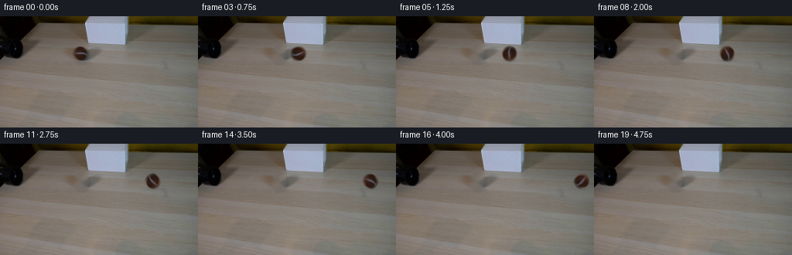
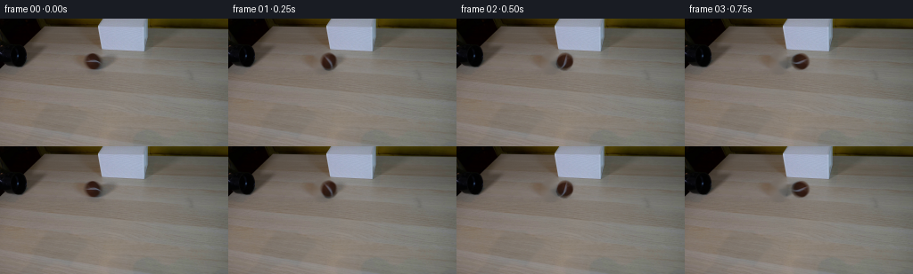

CODING AGENTS AS PIXEL WORLD MODELS
traex/GPT-5.6-Sol · 0150
点击播放 · 原生 RGB 像素
逐轮保存的候选
回放视频、检查图与代码变化。
每份候选均可单独播放。实际图片检查记录在下方工具轨迹中。
候选 01播放与检查图
点击播放 · 原生 RGB 像素


展开代码变化
--- 上一保存版本
+++ 本次保存版本
@@ -0,0 +1,148 @@
+from pathlib import Path
+import cv2
+import numpy as np
+from PIL import Image
+import artifact_io
+
+# PixelWorld case-local, deterministic RGB animation.
+CASE_DIR = Path(__file__).resolve().parent
+W, H = 256, 144
+N = 20
+
+
+def soft_object_mask(h, w, cx, cy):
+ yy, xx = np.mgrid[:h, :w]
+ # The source ball is an approximately 19 px sphere, with a faint contact edge.
+ d = np.sqrt((xx - cx) ** 2 + (yy - cy) ** 2)
+ return np.clip((10.55 - d) / 1.75, 0.0, 1.0).astype(np.float32)
+
+
+def make_clean_plate(source):
+ """Remove the source ball while retaining the locked-off table and its grain."""
+ yy, xx = np.mgrid[:H, :W]
+ # Include the antialiased outline and the tiny contact shadow under the sphere.
+ sphere = ((xx - 104.0) ** 2 / 11.5 ** 2 + (yy - 48.0) ** 2 / 11.5 ** 2) <= 1.0
+ contact = ((xx - 104.0) ** 2 / 10.5 ** 2 + (yy - 57.0) ** 2 / 3.1 ** 2) <= 1.0
+ mask = np.where(sphere | contact, 255, 0).astype(np.uint8)
+
+ # Telea interpolation follows the smooth tabletop gradient particularly well here.
+ bgr = cv2.cvtColor(source, cv2.COLOR_RGB2BGR)
+ clean = cv2.inpaint(bgr, mask, 4.0, cv2.INPAINT_TELEA)
+ clean = cv2.cvtColor(clean, cv2.COLOR_BGR2RGB)
+
+ # Blend only the center of the repair; a soft rim keeps all original table texture.
+ core = cv2.GaussianBlur(mask.astype(np.float32) / 255.0, (0, 0), 1.15)
+ core = np.clip(core, 0.0, 1.0)[..., None]
+ return np.clip(source * (1.0 - core) + clean * core, 0, 255).astype(np.uint8)
+
+
+def extract_ball(source, clean):
+ """Extract an antialiased premultiplied sprite from the ball in frame zero."""
+ cx, cy, half = 104, 48, 13
+ ys = slice(cy - half, cy + half + 1)
+ xs = slice(cx - half, cx + half + 1)
+ src = source[ys, xs].astype(np.float32)
+ bg = clean[ys, xs].astype(np.float32)
+
+ alpha_full = soft_object_mask(H, W, cx, cy)[ys, xs]
+ # Suppress geometrical-mask pixels that are indistinguishable from the clean plate.
+ # The lower threshold retains the muted gray tennis-ball seam.
+ difference = np.sqrt(np.mean((src - bg) ** 2, axis=2))
+ evidence = np.clip((difference - 1.4) / 8.5, 0.0, 1.0)
+ interior = np.sqrt((np.mgrid[-half:half+1, -half:half+1][1]) ** 2 +
+ (np.mgrid[-half:half+1, -half:half+1][0]) ** 2) <= 8.25
+ alpha = alpha_full * np.maximum(evidence, interior.astype(np.float32))
+ alpha = cv2.GaussianBlur(alpha, (0, 0), 0.32)
+ alpha = np.clip(alpha, 0.0, 1.0)
+
+ # Solve the compositing equation so subpixel edge colors do not carry a table halo.
+ premul = src - bg * (1.0 - alpha[..., None])
+ premul = np.maximum(premul, 0.0)
+ premul = np.minimum(premul, 255.0 * alpha[..., None])
+ return premul.astype(np.float32), alpha.astype(np.float32)
+
+
+def rotate_premultiplied(premul, alpha, degrees):
+ h, w = alpha.shape
+ center = ((w - 1) * 0.5, (h - 1) * 0.5)
+ matrix = cv2.getRotationMatrix2D(center, degrees, 1.0)
+ kwargs = dict(flags=cv2.INTER_CUBIC, borderMode=cv2.BORDER_CONSTANT, borderValue=0)
+ a = cv2.warpAffine(alpha, matrix, (w, h), **kwargs)
+ channels = [cv2.warpAffine(premul[..., c], matrix, (w, h), **kwargs)
+ for c in range(3)]
+ p = np.stack(channels, axis=2)
+ a = np.clip(a, 0.0, 1.0)
+ p = np.clip(p, 0.0, 255.0 * a[..., None])
+ return p, a
+
+
+def composite_patch(frame, premul, alpha, cx, cy):
+ ph, pw = alpha.shape
+ left = int(np.floor(cx - (pw - 1) / 2))
+ top = int(np.floor(cy - (ph - 1) / 2))
+ # Fractional x translation produces smooth constant-speed motion at this resolution.
+ frac_x = float(cx - np.floor(cx))
+ if frac_x:
+ m = np.float32([[1, 0, frac_x], [0, 1, 0]])
+ kwargs = dict(flags=cv2.INTER_LINEAR, borderMode=cv2.BORDER_CONSTANT, borderValue=0)
+ alpha = cv2.warpAffine(alpha, m, (pw, ph), **kwargs)
+ premul = np.stack([cv2.warpAffine(premul[..., c], m, (pw, ph), **kwargs)
+ for c in range(3)], axis=2)
+
+ x0, y0 = max(0, left), max(0, top)
+ x1, y1 = min(W, left + pw), min(H, top + ph)
+ if x0 >= x1 or y0 >= y1:
+ return
+ sx0, sy0 = x0 - left, y0 - top
+ sx1, sy1 = sx0 + (x1 - x0), sy0 + (y1 - y0)
+ a = alpha[sy0:sy1, sx0:sx1, None]
+ p = premul[sy0:sy1, sx0:sx1]
+ region = frame[y0:y1, x0:x1]
+ frame[y0:y1, x0:x1] = region * (1.0 - a) + p
+
+
+def add_contact_shadow(frame, cx, cy):
+ """A restrained, diffuse contact shadow anchors the moving sphere to the table."""
+ yy, xx = np.mgrid[:H, :W]
+ # Shadow is strongest immediately below the contact point and trails less than 1 px.
+ shadow = np.exp(-0.5 * (((xx - (cx + 0.6)) / 7.0) ** 2 +
+ ((yy - (cy + 9.3)) / 1.45) ** 2))
+ shadow *= 0.115
+ frame *= (1.0 - shadow[..., None])
+
+
+def main():
+ source = np.asarray(Image.open(CASE_DIR / "first_frame.png").convert("RGB"), dtype=np.uint8)
+ if source.shape != (H, W, 3):
+ raise ValueError(f"Unexpected first-frame shape: {source.shape}")
+
+ clean = make_clean_plate(source)
+ ball_premul, ball_alpha = extract_ball(source, clean)
+ frames = np.empty((N, H, W, 3), dtype=np.uint8)
+ frames[0] = source # Contract: exact source bytes after RGB decoding.
+
+ start_x, end_x = 104.0, 265.0
+ center_y = 48.0
+ radius = 9.15
+ for i in range(1, N):
+ progress = i / (N - 1)
+ cx = start_x + (end_x - start_x) * progress
+ # No easing: the filmed demonstration runs in real time at constant speed.
+ displacement = cx - start_x
+ clockwise_degrees = -np.degrees(displacement / radius)
+ p, a = rotate_premultiplied(ball_premul, ball_alpha, clockwise_degrees)
+
+ frame = clean.astype(np.float32)
+ add_contact_shadow(frame, cx, center_y)
+ composite_patch(frame, p, a, cx, center_y)
+ frames[i] = np.clip(np.rint(frame), 0, 255).astype(np.uint8)
+
+ # Explicit invariant checks before handing the RGB tensor to the provided writer.
+ assert frames.shape == (20, 144, 256, 3)
+ assert frames.dtype == np.uint8
+ assert np.array_equal(frames[0], source)
+ artifact_io.save(frames, CASE_DIR)
+
+
+if __name__ == "__main__":
+ main()
可观测工具轨迹
实际执行的命令与返回图片。
命令 1exit 0
/bin/bash -lc "cat prompt.txt && printf '\\n--- RULES ---\\n' && cat GENERATION_RULES.md"
命令 2exit 1
/bin/bash -lc "find . -maxdepth 2 -type f -printf '%p\\n' | sort && printf '\\n--- tools ---\\n' && command -v ffmpeg && command -v ffprobe && command -v python3"
命令 3exit 0
/bin/bash -lc "python3 - <<'PY'
from PIL import Image
im=Image.open('first_frame.png').convert('RGB')
print('size',im.size)
import numpy as np
x=np.array(im)
print('mean',x.mean((0,1)), 'min',x.min((0,1)), 'max',x.max((0,1)))
PY"命令 4exit 0
/bin/bash -lc "sed -n '1,240p' artifact_io.py"
命令 5exit 0
/bin/bash -lc "python3 - <<'PY'
from PIL import Image
import numpy as np
im=np.array(Image.open('first_frame.png').convert('RGB'))
# report 12x8 block means + grayscale ascii
G=im.mean(2)
chars=' .:-=+*#%@'
for by in range(0,144,6):
print(''.join(chars[min(9,int(G[by:by+6,bx:bx+4].mean()/256*10))] for bx in range(0,256,4)))
# color clusters kmeans if cv2
try:
import cv2
z=im.reshape(-1,3).astype(np.float32)
_,lab,c=cv2.kmeans(z,12,None,(cv2.TERM_CRITERIA_EPS+cv2.TERM_CRITERIA_MAX_ITER,50,.2),5,cv2.KMEANS_PP_CENTERS)
cnt=np.bincount(lab[:,0],minlength=12)
for n,v in sorted(zip(cnt,c),reverse=True): print(n, np.rint(v).astype(int))
except Exception as e: print(e)
PY"命令 6exit 0
/bin/bash -lc "python3 - <<'PY'
import cv2, numpy as np
from PIL import Image
im=cv2.imread('first_frame.png'); rgb=im[:,:,::-1]
# connected components under masks
masks={
'dark': np.max(rgb,2)<45,
'nearblack': np.mean(rgb,2)<35,
'brown': (rgb[:,:,0]>25)&(rgb[:,:,0]>rgb[:,:,1]*1.25)&(rgb[:,:,1]>rgb[:,:,2]*1.5)&(rgb[:,:,0]<130),
'bluewhite':(rgb[:,:,2]>150)&(rgb[:,:,2]>rgb[:,:,0]*1.1),
}
for name,m in masks.items():
n,l,st,cen=cv2.connectedComponentsWithStats(m.astype('uint8'),8)
print('\\n',name, 'pixels',m.sum())
for i in np.argsort(st[1:,4])[::-1][:15]+1:
x,y,w,h,a=st[i]; print(a,(x,y,w,h),tuple(np.round(cen[i],1)))
# ranges each row dark x minmax count
print('\\nrows dark (<45 max)')
m=masks['dark']
for y in range(0,144,4):
xs=np.where(m[y:y+4].any(0))[0]
if xs.size: print(y, len(xs),xs.min(),xs.max())
PY"命令 7exit 0
/bin/bash -lc "python3 - <<'PY'
from PIL import Image
import numpy as np
im=np.array(Image.open('first_frame.png').convert('RGB'))
# color classify downsample by majority / mean; 2x2 symbols
# K black, b brown, W lampshade light/blue, T table, D dark gray, .=bg
for y in range(0,144,3):
s=''
for x in range(0,256,3):
a=im[y:y+3,x:x+3].mean((0,1)); r,g,b=a
if max(a)<25: c='K'
elif r>1.35*g and g>1.7*b and r<130: c='B'
elif b>145 and b>1.12*r: c='W'
elif max(a)<70: c='d'
elif max(a)-min(a)<16 and a.mean()>145: c='L'
elif r>g>b and r-b>14: c='t'
else: c='.'
s+=c
print(f'{y:03d} '+s)
PY"命令 8exit 0
/bin/bash -lc "python3 - <<'PY'
import cv2, numpy as np
im=cv2.imread('first_frame.png')
g=cv2.cvtColor(im,cv2.COLOR_BGR2GRAY)
e=cv2.Canny(g,40,90)
lines=cv2.HoughLinesP(e,1,np.pi/180,25,minLineLength=12,maxLineGap=4)
for l in sorted(lines[:,0].tolist(), key=lambda q: -((q[2]-q[0])**2+(q[3]-q[1])**2))[:50]:
print(l)
PY"命令 9exit 0
/bin/bash -lc "python3 - <<'PY'
from PIL import Image
import numpy as np
x=np.array(Image.open('first_frame.png').convert('RGB'))
for y in range(34,67):
s=''
for xx in range(82,135):
r,g,b=x[y,xx]
lum=(int(r)+g+b)/3
if lum<15:c='#'
elif lum<30:c='K'
elif lum<50:c='k'
elif lum<75:c='d'
elif lum<100:c=':'
elif lum<120:c='-'
elif lum<140:c='='
elif lum<160:c='+'
elif lum<180:c='*'
else:c='W'
if r>1.35*g and g>1.5*b and r>25: c='B'
s+=c
print(f'{y:03d} {s}')
PY"命令 10exit 0
/bin/bash -lc "python3 - <<'PY'
from PIL import Image
import numpy as np
x=np.array(Image.open('first_frame.png').convert('RGB'))
for y in range(0,70,2):
# run segmentation classes each pixel, compact runs
cls=[]
for xx in range(256):
a=x[y:y+2,xx].mean(0); r,g,b=a; lm=a.mean()
if lm<30:c='K'
elif lm<60:c='d'
elif b>145 and b>1.1*r:c='W'
elif r>1.3*g and g>1.5*b:c='B'
elif lm<95:c=':'
elif lm<120:c='-'
elif lm<145:c='='
else:c='+'
cls.append(c)
runs=[]; st=0
for i in range(1,257):
if i==256 or cls[i]"'!=cls[st]:
if i-st>=3:runs.append(f'"'{st}-{i-1}{cls[st]}')
st=i
print(y,' '.join(runs))
PY"命令 11exit 0
/bin/bash -lc "python3 - <<'PY'
from PIL import Image
import numpy as np
x=np.array(Image.open('first_frame.png').convert('RGB'))
# Print rgb summaries around ball classes: luminance and hue Brown
for y in range(36,61):
s=''
for xx in range(90,119):
r,g,b=map(int,x[y,xx]); lm=(r+g+b)//3
if r>1.35*g and g>1.3*b:c='B' # brown
elif lm<10:c='#'
elif lm<25:c='K'
elif lm<45:c='k'
elif lm<65:c='d'
elif lm<85:c=':'
elif lm<105:c='-'
elif lm<125:c='='
elif lm<145:c='+'
else:c='*'
s+=c
print(f'{y:03d} {s}')
print('values center')
for y in range(40,57,2):
print(y,[tuple(x[y,xx]) for xx in range(98,112,2)])
PY"命令 12exit 0
/bin/bash -lc "python3 - <<'PY'
import cv2, numpy as np
im=cv2.imread('first_frame.png')
for method in [cv2.INPAINT_TELEA,cv2.INPAINT_NS]:
mask=np.zeros(im.shape[:2],np.uint8);cv2.circle(mask,(104,48),11,255,-1)
out=cv2.inpaint(im,mask,4,method)
cv2.imwrite(f'.tmp/inpaint_{method}.png',out)
print(method, out[48,104,::-1],out[40,104,::-1],out[56,104,::-1])
PY"命令 13exit 1
/bin/bash -lc "cat > generate.py <<'PY'
from pathlib import Path
import cv2
import numpy as np
from PIL import Image
import artifact_io
# PixelWorld case-local, deterministic RGB animation.
CASE_DIR = Path(__file__).resolve().parent
W, H = 256, 144
N = 20
def soft_object_mask(h, w, cx, cy):
yy, xx = np.mgrid[:h, :w]
# The source ball is an approximately 19 px sphere, with a faint contact edge.
d = np.sqrt((xx - cx) ** 2 + (yy - cy) ** 2)
return np.clip((10.55 - d) / 1.75, 0.0, 1.0).astype(np.float32)
def make_clean_plate(source):
\"\"\"Remove the source ball while retaining the locked-off table and its grain.\"\"\"
yy, xx = np.mgrid[:H, :W]
# Include the antialiased outline and the tiny contact shadow under the sphere.
sphere = ((xx - 104.0) ** 2 / 11.5 ** 2 + (yy - 48.0) ** 2 / 11.5 ** 2) <= 1.0
contact = ((xx - 104.0) ** 2 / 10.5 ** 2 + (yy - 57.0) ** 2 / 3.1 ** 2) <= 1.0
mask = np.where(sphere | contact, 255, 0).astype(np.uint8)
# Telea interpolation follows the smooth tabletop gradient particularly well here.
bgr = cv2.cvtColor(source, cv2.COLOR_RGB2BGR)
clean = cv2.inpaint(bgr, mask, 4.0, cv2.INPAINT_TELEA)
clean = cv2.cvtColor(clean, cv2.COLOR_BGR2RGB)
# Blend only the center of the repair; a soft rim keeps all original table texture.
core = cv2.GaussianBlur(mask.astype(np.float32) / 255.0, (0, 0), 1.15)
core = np.clip(core, 0.0, 1.0)[..., None]
return np.clip(source * (1.0 - core) + clean * core, 0, 255).astype(np.uint8)
def extract_ball(source, clean):
\"\"\"Extract an antialiased premultiplied sprite from the ball in frame zero.\"\"\"
cx, cy, half = 104, 48, 13
ys = slice(cy - half, cy + half + 1)
xs = slice(cx - half, cx + half + 1)
src = source[ys, xs].astype(np.float32)
bg = clean[ys, xs].astype(np.float32)
alpha_full = soft_object_mask(H, W, cx, cy)[ys, xs]
# Suppress geometrical-mask pixels that are indistinguishable from the clean plate.
# The lower threshold retains the muted gray tennis-ball seam.
difference = np.sqrt(np.mean((src - bg) ** 2, axis=2))
evidence = np.clip((difference - 1.4) / 8.5, 0.0, 1.0)
interior = np.sqrt((np.mgrid[-half:half+1, -half:half+1][1]) ** 2 +
(np.mgrid[-half:half+1, -half:half+1][0]) ** 2) <= 8.25
alpha = alpha_full * np.maximum(evidence, interior.astype(np.float32))
alpha = cv2.GaussianBlur(alpha, (0, 0), 0.32)
alpha = np.clip(alpha, 0.0, 1.0)
# Solve the compositing equation so subpixel edge colors do not carry a table halo.
premul = src - bg * (1.0 - alpha[..., None])
premul = np.maximum(premul, 0.0)
premul = np.minimum(premul, 255.0 * alpha[..., None])
return premul.astype(np.float32), alpha.astype(np.float32)
def rotate_premultiplied(premul, alpha, degrees):
h, w = alpha.shape
center = ((w - 1) * 0.5, (h - 1) * 0.5)
matrix = cv2.getRotationMatrix2D(center, degrees, 1.0)
kwargs = dict(flags=cv2.INTER_CUBIC, borderMode=cv2.BORDER_CONSTANT, borderValue=0)
a = cv2.warpAffine(alpha, matrix, (w, h), **kwargs)
channels = [cv2.warpAffine(premul[..., c], matrix, (w, h), **kwargs)
for c in range(3)]
p = np.stack(channels, axis=2)
a = np.clip(a, 0.0, 1.0)
p = np.clip(p, 0.0, 255.0 * a[..., None])
return p, a
def composite_patch(frame, premul, alpha, cx, cy):
ph, pw = alpha.shape
left = int(np.floor(cx - (pw - 1) / 2))
top = int(np.floor(cy - (ph - 1) / 2))
# Fractional x translation produces smooth constant-speed motion at this resolution.
frac_x = float(cx - np.floor(cx))
if frac_x:
m = np.float32([[1, 0, frac_x], [0, 1, 0]])
kwargs = dict(flags=cv2.INTER_LINEAR, borderMode=cv2.BORDER_CONSTANT, borderValue=0)
alpha = cv2.warpAffine(alpha, m, (pw, ph), **kwargs)
premul = np.stack([cv2.warpAffine(premul[..., c], m, (pw, ph), **kwargs)
for c in range(3)], axis=2)
x0, y0 = max(0, left), max(0, top)
x1, y1 = min(W, left + pw), min(H, top + ph)
if x0 >= x1 or y0 >= y1:
return
sx0, sy0 = x0 - left, y0 - top
sx1, sy1 = sx0 + (x1 - x0), sy0 + (y1 - y0)
a = alpha[sy0:sy1, sx0:sx1, None]
p = premul[sy0:sy1, sx0:sx1]
region = frame[y0:y1, x0:x1]
frame[y0:y1, x0:x1] = region * (1.0 - a) + p
def add_contact_shadow(frame, cx, cy):
\"\"\"A restrained, diffuse contact shadow anchors the moving sphere to the table.\"\"\"
yy, xx = np.mgrid[:H, :W]
# Shadow is strongest immediately below the contact point and trails less than 1 px.
shadow = np.exp(-0.5 * (((xx - (cx + 0.6)) / 7.0) ** 2 +
((yy - (cy + 9.3)) / 1.45) ** 2))
shadow *= 0.115
frame *= (1.0 - shadow[..., None])
def main():
source = np.asarray(Image.open(CASE_DIR / \"first_frame.png\").convert(\"RGB\"), dtype=np.uint8)
if source.shape "'!= (H, W, 3):
raise ValueError(f"Unexpected first-frame shape: {source.shape}")
clean = make_clean_plate(source)
ball_premul, ball_alpha = extract_ball(source, clean)
frames = np.empty((N, H, W, 3), dtype=np.uint8)
frames[0] = source # Contract: exact source bytes after RGB decoding.
start_x, end_x = 104.0, 265.0
center_y = 48.0
radius = 9.15
for i in range(1, N):
progress = i / (N - 1)
cx = start_x + (end_x - start_x) * progress
# No easing: the filmed demonstration runs in real time at constant speed.
displacement = cx - start_x
clockwise_degrees = -np.degrees(displacement / radius)
p, a = rotate_premultiplied(ball_premul, ball_alpha, clockwise_degrees)
frame = clean.astype(np.float32)
add_contact_shadow(frame, cx, center_y)
composite_patch(frame, p, a, cx, center_y)
frames[i] = np.clip(np.rint(frame), 0, 255).astype(np.uint8)
# Explicit invariant checks before handing the RGB tensor to the provided writer.
assert frames.shape == (20, 144, 256, 3)
assert frames.dtype == np.uint8
assert np.array_equal(frames[0], source)
artifact_io.save(frames, CASE_DIR)
if __name__ == "__main__":
main()
PY
python3 generate.py
python3 - <<'"'PY'
from pathlib import Path
import numpy as np
from PIL import Image
src=np.array(Image.open('first_frame.png').convert('RGB'))
z=np.load('pixels.npz')['pixels']
frames=np.stack([((z[:,:,i]>>16)&255, (z[:,:,i]>>8)&255, z[:,:,i]&255) for i in range(z.shape[2])],axis=-1).astype(np.uint8).transpose(0,1,2,3)
print('packed',z.shape,z.dtype,'frames',frames.shape,frames.dtype)
print('frame0 exact',np.array_equal(frames[0],src),'maxdiff',np.abs(frames[0].astype(int)-src.astype(int)).max())
for i in range(20):
d=np.any(frames[i]"'!=src,axis=2)
ys,xs=np.where(d)
print(f'"'{i:02d}',int(d.sum()), (int(xs.min()),int(ys.min()),int(xs.max()),int(ys.max())) if len(xs) else '-')
print('outputs',[(p.name,p.stat().st_size) for p in map(Path,['pixels.npz','inspection.png','transition_check.png','index.html'])])
PY"命令 14exit 0
/bin/bash -lc "python3 - <<'PY'
from pathlib import Path
from PIL import Image
import numpy as np
src=np.array(Image.open('first_frame.png').convert('RGB'))
F=np.stack([np.array(Image.open(f'frames/{i:02d}.png').convert('RGB')) for i in range(20)])
print('frames',F.shape,F.dtype,'frame0 exact',np.array_equal(F[0],src),'maxdiff',np.abs(F[0].astype(int)-src.astype(int)).max())
z=np.load('pixels.npz')['pixels']; p=(F[:,:,:,0].astype(np.uint32)<<16)|(F[:,:,:,1].astype(np.uint32)<<8)|F[:,:,:,2]
print('packed tensor exact',np.array_equal(z,p.transpose(1,2,0)),z.shape,z.dtype)
for i in range(20):
d=np.any(F[i]"'!=src,axis=2); ys,xs=np.where(d)
print(f'"'{i:02d} diff={d.sum():5d}', (int(xs.min()),int(ys.min()),int(xs.max()),int(ys.max())) if len(xs) else '-')
print('outputs',[(p.name,p.stat().st_size) for p in map(Path,['pixels.npz','inspection.png','transition_check.png','index.html'])])
PY"命令 15exit 0
/bin/bash -lc "python3 - <<'PY'
from PIL import Image
import numpy as np
F=np.stack([np.array(Image.open(f'frames/{i:02d}.png').convert('RGB')) for i in range(20)])
# Locate dark-brown ball pixels only in tabletop band after tube exit.
for i,f in enumerate(F):
r,g,b=f[:,:,0],f[:,:,1],f[:,:,2]
m=(r>25)&(r<90)&(r>g*1.25)&(g>b*1.2)&(np.indices(r.shape)[0]>35)&(np.indices(r.shape)[0]<62)&(np.indices(r.shape)[1]>85)
ys,xs=np.where(m)
print(i, len(xs), (round(xs.mean(),2),round(ys.mean(),2)) if len(xs) else None, (xs.min(),xs.max()) if len(xs) else None)
PY"命令 16exit 0
/bin/bash -lc "python3 - <<'PY'
from PIL import Image
import numpy as np
F=np.stack([np.array(Image.open(f'frames/{i:02d}.png').convert('RGB')) for i in range(20)])
# ASCII numerical crops, every other frame. B brown, dark/gray seam #, backdrop otherwise .
for i in range(0,20,2):
cx=round(104+161*i/19); f=F[i]
print('\\nFRAME',i,'cx',cx)
for y in range(37,60,2):
s=''
for x in range(max(0,cx-13),min(256,cx+14)):
r,g,b=map(int,f[y,x]);
if r>1.3*g and g>1.3*b and r<100: c='B'
elif (r+g+b)/3<75:c='#'
elif (r+g+b)/3<100:c=':'
else:c='.'
s+=c
print(s)
PY"命令 17exit 0
/bin/bash -lc "python3 - <<'PY'
from PIL import Image
import numpy as np
x=np.array(Image.open('first_frame.png').convert('RGB'))
for y in [34,38,40,42,44,46,48,50,52,54,56,58]:
print('\\ny',y)
for xx in range(80,121,4): print(xx,tuple(map(int,x[y,xx])),end='; ')
PY"命令 18exit 0
/bin/bash -lc "python3 -m py_compile generate.py artifact_io.py && python3 - <<'PY'
import numpy as np
from PIL import Image
F=np.stack([np.asarray(Image.open(f'frames/{i:02d}.png').convert('RGB')) for i in range(20)])
assert F.shape==(20,144,256,3) and F.dtype==np.uint8
assert np.array_equal(F[0],np.asarray(Image.open('first_frame.png').convert('RGB')))
# Verify monotonic rightward travel by dark-brown component centers.
centers=[]
y,x=np.indices((144,256))
for i in range(19):
r,g,b=F[i].transpose(2,0,1)
m=(r>25)&(r<90)&(r.astype(float)>g*1.25)&(g.astype(float)>b*1.2)&(y>35)&(y<62)&(x>85)
centers.append(float(x[m].mean()))
assert all(b>a for a,b in zip(centers,centers[1:])), centers
print('validated: exact first frame; RGB tensor contract; monotonic ball centers')
print('centers:', ' '.join(f'{v:.1f}' for v in centers))
PY
find . -maxdepth 2 -type f -printf '%p %s bytes\\n' | sort"命令 19exit 0
/bin/bash -lc 'sha256sum first_frame.png generate.py pixels.npz frames/00.png frames/19.png index.html && python3 generate.py >/dev/null && sha256sum first_frame.png generate.py pixels.npz frames/00.png frames/19.png index.html'
命令 20exit 0
/bin/bash -lc "python3 generate.py && python3 - <<'PY'
import numpy as np
from pathlib import Path
from PIL import Image
F=np.stack([np.asarray(Image.open(f'frames/{i:02d}.png').convert('RGB')) for i in range(20)])
src=np.asarray(Image.open('first_frame.png').convert('RGB'))
assert F.shape==(20,144,256,3) and F.dtype==np.uint8
assert np.array_equal(F[0],src)
z=np.load('pixels.npz')['pixels']
p=(F[...,0].astype(np.uint32)<<16)|(F[...,1].astype(np.uint32)<<8)|F[...,2]
assert z.shape==(144,256,20) and np.array_equal(z,p.transpose(1,2,0))
y,x=np.indices((144,256)); centers=[]
for i in range(19):
r,g,b=F[i].transpose(2,0,1)
m=(r>25)&(r<90)&(r.astype(float)>g*1.25)&(g.astype(float)>b*1.2)&(y>35)&(y<62)&(x>85)
centers.append(float(x[m].mean()))
assert all(b>a for a,b in zip(centers,centers[1:])),centers
assert all(Path(f'frames/{i:02d}.png').stat().st_size>40000 for i in range(20))
print('PASS shape/dtype/exact-frame0/packed-data/frame-files/monotonic-motion')
print('ball x centers:', ' '.join(f'{v:.1f}' for v in centers))
print('final artifacts:', {f:Path(f).stat().st_size for f in ['pixels.npz','inspection.png','transition_check.png','index.html']})
PY
sha256sum generate.py pixels.npz frames/00.png frames/19.png"保存候选 1 份；完成命令 20 次；可验证图片返回 0 张。原始 API 响应与完整日志保留在本地。